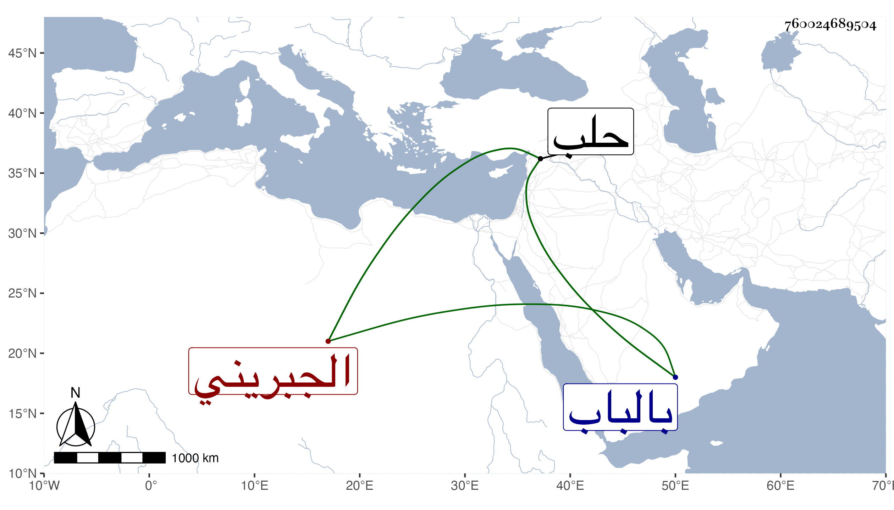

0902Sakhawi.DawLamic.ITO20230111-ara1.EIS1600.760024689504
Biography ID: 760024689504
1230
صديق بن عمر بن عمر بن نبهان بن عمر بن نبهان بن علوان الجبريني . كان شيخا حسنا رئيسا كريما بهيا حسن الشكالة متوددا مديما للجمعة بحلب وللجماعات ببلده حج مرات ، ومات بعد الكائنة بحلب في سنة ثلاث بالباب من أعمالها ، ودفن بها وقد نيف على الستين . ذكره ابن خطيب الناصرية قال والظاهر انه حفظ القرآن .
